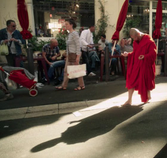

Xi you
Journey to the West
Tsai Ming-liang – Frankreich/Taiwan 2014
56 min – HD – no dialogues
D+Sc: Tsai Ming-liang – DoP: Antoine Heberlé – S: Frédéric Salles – E: Lei Shen Qing – M: Sébastien Mauro – With Lee Kang-sheng, Denis Lavant
The face of an exhausted man breathing deeply, his face agitated and, nearby, the sea. A Buddhist monk walks barefoot and incredibly slowly through Marseille – so slowly, that his progress is barely perceptible and he becomes a calming influence in the midst of the town’s goings-on.
Lee Kang-sheng, who features in all Tsai Ming-liang's films, plays the monk with impressive energy. His uniform slow motion footsteps and devoted posture turn his performance into a veritable tour de force as he unswervingly makes his way from the coast to the market in Noailles, like an illusion in his bright red robe.
XI YOU represents another edition of the director's series of short films that expand Lee Kang-sheng's thirty minute slow walking performance at Taipei's National Theatre into a 'slow walking expedition'. Unusual brilliantly chosen camera angles provide a collage of various districts in Marseille, creating a hypnotic space in which this meditative peregrination becomes a surprising journey of discovery.
friday 9 oct 10.30 pm werkstattkino
Tsai Ming-liang born in 1957 in Kuching, Malaysia, he graduated from the Drama and Cinema Department of the Chinese Cultural University of Taiwan and worked as a theatrical producer and TV director. His second feature film, Vive l'Amour - Es lebe die Liebe (1994), won the Golden Lion (best picture) at the 1994 Venice Film Festival. His idiosyncratic oeuvre continues to enthrall audiences worldwide.
Films (selection) Yard Work is hard work 2008 – Twilight Spirit 2009 – Unsubscribe #1 - #4 2010 – August Song 2011 – Pont de Gaze 2012 – MackDash 2012 – Let your light shine 2013 – New Fancy Foils 2013 – Dusty Stacks of Mom: The Poster Project 2013